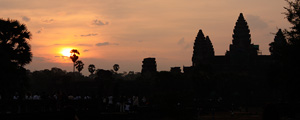

オススメのツアー
仏教の聖地で紅葉を楽しむ
紅葉の美しい時期に弘法大使のお膝元であり、日本仏教における「聖地」として有名な高野山に訪れます。天皇家や歴史上の人物として有名な戦国大名なども眠る場所として知られている奥の院にも足を運びます。
イスタンブールを満喫する
イスタンブールが誇る世界遺産観光を含んだ市内観光ツアーです。ブルーモスクの名で知られるスルタンアフメット・モスクは必見。夕食は「ベリーダンスと民族舞踊の夕べ」をお楽しみ頂けます。
アンコールワット遺跡を巡る

世界遺産アンコールワットを巡るツアーです。日本語の話せる現地添乗員がご案内します。アンコール遺跡観光だけでなく、伝統舞踊アプサラの舞鑑賞やアンコールワットの朝焼けも楽しめます。